شمارهی نخست از یک مجموعهی سهقسمتی که هر شمارهاش چهار چیز را کنار هم میگذارد: یک بحث نظری، یک تجربهی واقعی، یک اقدام پیشنهادی برای سیاستگذار، و معرفی یکی از شاخصهای سنجش دادهی باز.
این شماره از تعریف دادهی حکومتی باز شروع میکند، جایگاه آن را در گزارش دولت الکترونیک ۲۰۱۸ سازمان ملل بررسی میکند، داشبورد دابلین را بهعنوان تجربه معرفی میکند و به شاخص جهانی دادهی باز میرسد.
بخش اول: کلیات
مقدمه
امروزه دادهها و اطلاعات زیادی در اختیار دولتها و نیز سایر مردم وجود دارد که خود از آن استفاده نمیکنند و یا روش بهرهمندی از آنرا را نمیدانند. علیرغم انبوهی از منابع خلق داده، دادههای دولت به دلیل مقیاس، وسعت و وضعیت آنها از مهمترین آنها به حساب میآید.
در طول سالیان گذشته و به دنبال توسعه حکمرانی الکترونیک و دولت الکترونیک، رویکردهای نوینی پدیدار شدهاند که به دنبال تحول برجسته و عمیق در حکمرانی کشورها میباشند. مفاهیم «دادهی باز» و «دادهی حکومتی باز» از جدیدترین ابزارهای تحولی این عرصه میباشند.
«دادهی باز» افراد و نهادهای مختلف در سطح دولت و مردم را تشویق میکند تا دادههایی را که بصورت عمومی در سطح وب منتشر کنند. در این میان افراد و مجموعههای فراوانی وجود دارند که با بهرهگیری از آنها و انجام تحلیلهایی میتوانند نتایج و اثراتی تولید کنند که بعضاً تصور آن هم امکانپذیر نبود.
«دادهی باز» در یک مقیاس بزرگتر قرار میگیرد که در اصطلاح از آن بهعنوان «دادهی حکومتی باز» یاد میشود. این اصطلاح از ۳ عنصر اصلی تشکیل شده است:
حکومت باز: اطلاعات دولتی یک دارایی ملی است و قانون و میبایست سیاست(های) متناسبی برای دسترسی سریع به آنها به شکلی که مردم بهراحتی بتوانند پیدا و مورد استفاده قرار دهند، اتخاذ نمود. سه اصل شفافیت، مشارکت و همکاری، سنگبنای یک دولت آزاد را شکل میدهند.
دادهی دولت: به هر گونه داده و اطلاعات تولید شده توسط نهادههای دولتی اشاره دارد.
دادهی باز: منظور دادهای هستند که میتوانند بهطور آزادانه مورد استفاده قرار گیرند و توسط هر فردی توزیع و مجدد به کارگیری شوند. در اغلب موارد نیز به الزاماتی برای تخصیص منبع و به اشتراکگذاری با قواعد ویژه نیاز است (کتابچه دادهی باز، ۲۰۱۸). هنگامی که این سه عنصر کنار هم قرار گرفتند یک مفهوم جدیدی تولید شدهاست که بنیاد سانلایت(۲۰۱۷) در توصیف آن بیان میکند: یک دادهی دولتی هنگامی باز محسوب میشود که کامل، اولیه، به موقع، قابلدسترس، ماشینخوان، غیر تبعیضآمیز، غیراختصاصی، دائمی(پایدار)، مجوز آزاد و در نهایت رایگان باشند.
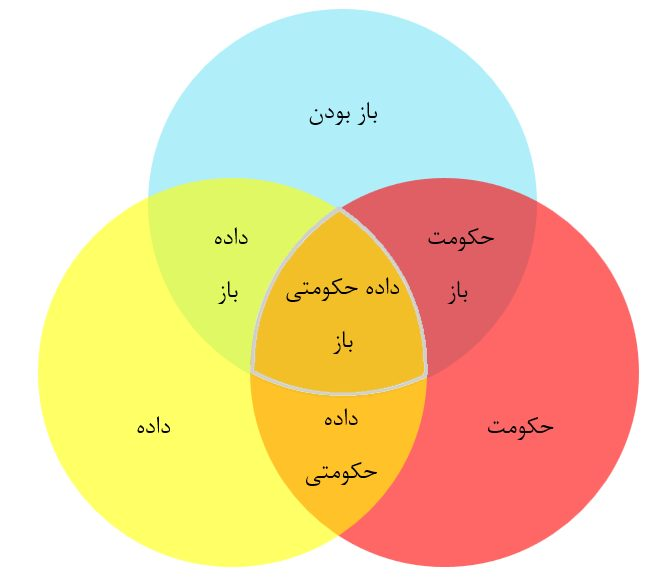
(بانک جهانی، ۲۰۱۷)
دادهی حکومتی باز در گزارش دولت الکترونیک سازمان ملل متحد در سال ۲۰۱۸
| لینک | عنوان: گزارش بررسی دولت الکترونیک سال ۲۰۱۸ United Nations E-Government Survey ۲۰۱۸ |
| مسئول: دپارتمان امور اجتماعی و اقتصادی سازمان ملل متحد United Nations Department of Economic and Social Affairs (UNDESA) | |
| محور گزارش: حرکت دولت الکترونیک به حمایت از تحول به سمت جوامع پایدار و مقاوم | |
| منبع: فصل پنجم: روندهای جهانی در دولتالکترونیک - صفحه ۸۳ |
مزایای دادهی حکومتی باز از نگاه سازمان ملل
- پیگیری پیشرفتها با ایجاد دادههای بهتر
- حمایت از ایجاد نهادهای مؤثر، پاسخگو و فراگیر در همه سطوح برای دستیابی به هدف ۱۶ سازمان ملل در توسعه پایدار
- افزایش شفافیت، پاسخگویی و اعتماد به دولت و نهادهای عمومی
- مشارکت و همکاری بازیگران بخشهای عمومی، خصوصی و سایر افراد جامعه
- کمک به بهبود ارائه خدمات در بسیاری از بخشهای مهم برای توسعه پایدار مانند آموزش، بهداشت، محیط زیست، حمایت اجتماعی و رفاه و امور مالی
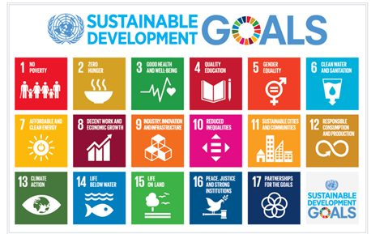
روندها در دادههای حکومتی باز
بسیاری از کشورها دادهها را با فرمتهای باز در پورتالها به اشتراک میگذارند که اغلب به آنها «پورتال دادههای حکومتی باز» گفته میشود. بسیاری دیگر کاتالوگهای دادهی حکومتی باز دارند که کلیه مجموعه دادههای موجود را که معمولاً براساس موضوع (مثل: محیط زیست، هزینه، بهداشت و...) هستند را فهرست و سازماندهی میکنند.
گزارش دولت الکترونیک سازمان ملل در سال ۲۰۱۸، پیشرفت دادهی حکومتی باز را از طریق وبسایتهای دولتی، پورتالهای اختصاصی و کاتالوگهای آن دنبال میکند. همانطور که در شکل زیر نشان داده شده است، در سال ۲۰۱۸ تعداد کشورهایی که دارای درگاه هستند به ۱۳۹ رسیده است که ۷۲ درصد از کشورهای عضو سازمان ملل را تشکیل می دهند. این شکل روند و پیشرفت قابل توجهی در مقایسه با ۴۶ کشور در سال ۲۰۱۴ و ۱۰۶ کشور در سال ۲۰۱۶ نشان میدهد.
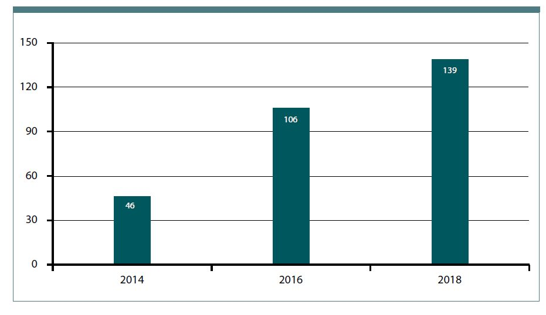
به طور کلی ۸۴ درصد این پورتالها یک فهرست فراداده برای توصیف مفاهیم اساسی داده، روش و ساختار آن وجود دارند. عملکرد پورتالهای OGD نیز درحال بهبود است. حدود ۷۴ درصد از کشورهایی که دارای پورتالها و وبسایتهای OGD هستند؛ در مورد استفاده و پیمایش مجموعه داده های پیچیده راهنمایی میکنند، کاربران را به درخواست داده های جدید ترغیب میکنند، اقدام به اجرای هکاتون ها و ترویج استفاده از داده های عمومی برای ایجاد برنامه های آنلاین میکنند.
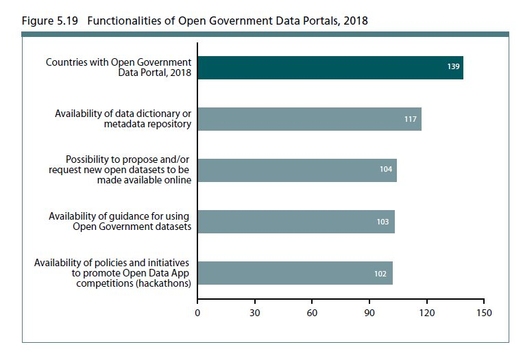
دادهی باز هنگامی تحقق پیدا میکند که اطلاعات در قالب ماشینخوان منتشر میشود، منع قانونی برای دسترسی به آنها وجود نداشته باشد، رایگان بوده و در انواع گستردهای از فایلهای استاندارد باز موجود است.
ساخت دادهها به صورت قابل خواندن توسط انسان و ماشین گام مهمی در جهت استفاده بیشتر از داده های حکومتی باز است.
شکل زیر تعداد کشورهایی که داده را در قالبهای خوانا و غیرخوانا با ماشین در بخش های آموزش، بهداشت، رفاه اجتماعی، کار و محیط زیست ارائه می دهد.
در حالی که دادههای ارائه شده در قالبهای ماشینخوان طی دو سال و در بخشهای مختلف دو برابر شده است.
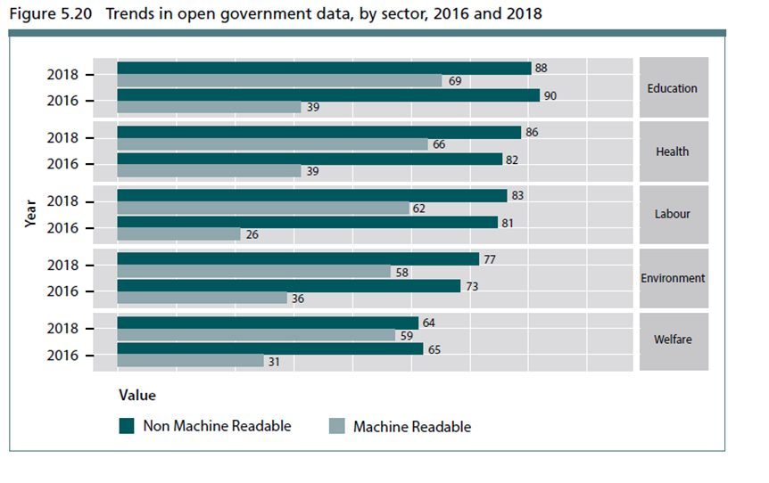
تأثیرات بالقوه دادهی حکومتی باز
مهمترین تاثیرات دادهی حکومتی باز عبارتاند از:
- شفافیت Transparency
- پاسخگویی Accountability
- مشارکت شهروندان Citizen Engagement
- همکاری Collaboration
- حکمرانی بهتر Better Governance
- تصمیم گیری بهتر Better Decision making
- نوآوری Innovation
بخش دوم: تجربه دادهی باز
داشبورد دابلین
یک وب سایت و پورتال تعاملی است که اطلاعاتی در زمان واقعی، داده های نشانگر سری زمانی و نقشه های تعاملی را در مورد همه جنبه های شهر دوبلین در اختیار شهروندان، کارمندان عمومی و شرکت ها قرار می دهد. داشبورد دابلین این امکان را برای کاربران فراهم میکند تا اطلاعات دقیق و به روز در مورد شهر را که به تصمیم گیری روزمره کمک میکند و تجزیه و تحلیل آگاهانه را تقویت میکند، به دست آورند.
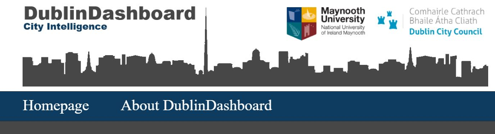
داشبورد دابلین دادههایی را از منابع اصلی دادهها (از جمله شورای شهر دابلین، Dublinked، دفتر مرکزی آمار، Eurostat، بخشهای دولتی و...) جمع نموده تا هزاران تصویر داده تعاملی را ارائه دهد. این دادههای زیربنایی به صورت رایگان در دسترس است تا دیگران بتوانند تجزیه و تحلیل خود را انجام دهند و برنامه ها و تصاویر خود را بسازند. برخی از استفادهها و کاربردهای داشبورد دابلین به شرح ذیل میباشد:
- شهروندان که به دنبال اطلاعاتی مثل شرایط فعلی ترافیک یا فضای پارکینگ هستند.
- شرکت هایی که مایل به دسترسی به اطلاعات مربوط به یک منطقه یا دادههای حیاتی هستند.
- کارمندان دولتی که به تدوین خطمشی علاقمند هستند.
- کاربرانی که میخواهند نحوه عملکرد دابلین را با معیارهای مختلف و در مقایسه با سایر شهرها و مناطق بررسی کنند.
- چگونه مقامات محلی بودجه خود را خرج میکنند.
- آنچه در حمل و نقل و محیط اتفاق می افتد را در زمان واقعی مشاهده کنند.
- استفاده و برقراری ارتباط با نقشه های سرشماری، جرم، ثبت نام زنده، شرکتها، مسکن و برنامهریزی.
- خدمات شهری نزدیک را پیدا کنید و یا مشکلات خود را در منطقه خود گزارش دهید.
- استفاده از داده ها برای انجام تجزیه و تحلیل یا دانلود آنها برای ساخت برنامه ها
بخش سوم: بهترین اقدامات کشورها در عرصهی دادهی باز
اقدام پیشنهادی اول: تدوین استراتژی ملی دادهی باز و برنامه عملی برای پیاده سازی آن
برای دادهی باز، تدوین یک استراتژی و ارتباط آن با سیاستها برای دولت(ها) بسیار مهم است. سیاست و استراتژی باید به روشنی حق دسترسی و استفاده مجدد از اطلاعات و همچنین الزام به استفاده از مجوز باز را مشخص کند.
استراتژی باید با همکاری متخصصان دادهی باز (کارشناسان) و مدیران دولتی سطح بالا تهیه شود تا از مشارکت ذینفعان اطمینان حاصل شود. به ویژه مشارکت و درگیرکردن موسسات عمومی برای یک استراتژی دادهی باز موفق، مهم و حیاتی است. استراتژی باید بخشهای زیر را شامل شود:
- ماموریت، چشم انداز، هدف، اصول (مثل اصول FAIR) و ارزش ها
- اصول راهنما، تشریح اصول اصلی برای مدیریت دادهی باز (به عنوان مثال: باز به طور پیش فرض) و حکمرانی دادهی باز. به ویژه، استراتژی باید یک ساختار و یا ارجاع به یک سند منتشر شده در پورتال ملی را در برگیرد که در آن مسئولیتهای ملی مربوط به دادهی باز توصیف میشوند (به عنوان مثال: کدام مرکز هدایت و کدام مرکز در سیاست دادهی باز و برنامه اجرایی سهیم است). تعریف دقیق مسئولیت ها و در نظرگرفتن سازوکارهای اجرایی برای اطمینان از مشارکت ذینفعان بسیارکلیدی است.
- حوزه های دارای اولویت یا ارزش بالا (مانند حمل و نقل، رشد اقتصادی، محیط زیست، سلامت) برای توسعه پایدار کشور. هر حوزه باید لیست (یا ارجاعی) از مجموعهدادههای (دیتاستهای) با ارزش بالا را شناسایی و برای انتشار در اولویت قرار دهد.
- مزایا و استفاده از دادهی باز، ارائهی مزایای اقتصادی استفاده از دادهی باز و نیز فهرستی از نمونه ها و نحوه استفاده و استفاده مجدد از دادهی باز.
- اهداف کلی که جهت دادهی باز را تعیین میکند.
- مزایای پیشبینی شده که نتایج اجتماعی، اقتصادی و سیاسی احتمالی و بالقوه را توصیف میکند.
برنامه اجرایی که در آن اقدامات لازم برای هر موضوع استراتژیک، بازه زمانی تحویل آنها و واحدهای مسئول اجرای آنها ذکر شده است.
تجربه بینالمللی در تدوین استراتژی دادهی باز
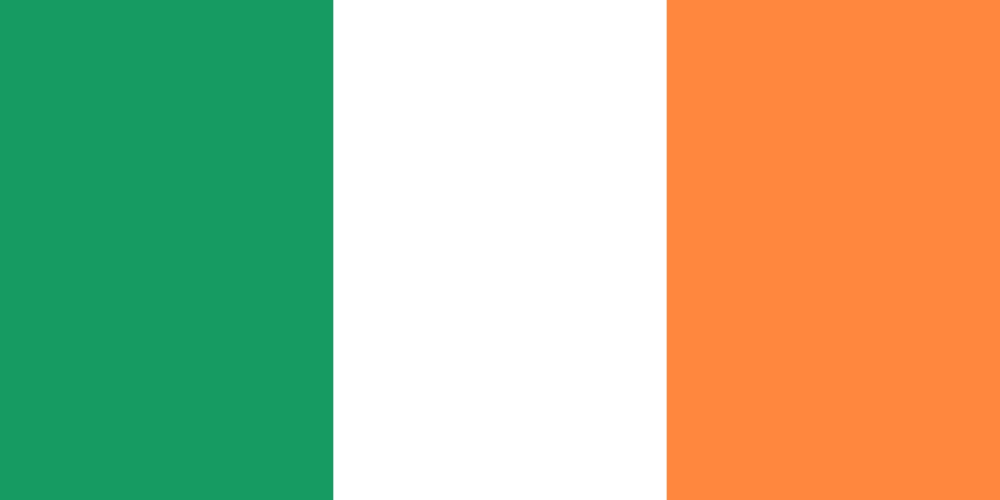
بخش چهارم: شاخصهای دادهی باز
امروزه دنیا شاهد دگرگونی چشمگیری است که از فنّاوری و رسانههای دیجیتال بهره برده و بهوسیله دادهها واطلاعات تغذیه میشود. این دگرگونی، ظرفیت بالایی در راستای ایجاد و تقویت دولتها و سازمانهای شفافتر، مسئولیتپذیرتر، کارآمدتر، پاسخگوتر و اثربخشتر دارد. همچنین میتوان با طراحی، انتشار و ارزیابی ارائهی داده، به توسعه پایدار درمقیاس ملی و جهانی منتهی گردد.
ارزیابی ارائهی داده، یک مقیاس جهانی در مورد چگونگی کیفیت انتشار دادهها و مجموعه دادهها توسط سازمانها برای تحقق اهداف ذینفعان است. این مسیر بینش ارزشمندی را برای منتشرکنندگان و صاحبان داده ایجاد میکند تا بفهمند که کجا و چه مقدار دارای شکاف داده هستند. همچنین نشان میدهد که چگونه میتوان دادهها را بیشتر مورد استفاده قرار داد تا تاثیرگذاری بیشتری داشته باشند.
تأثیرات اجتماعی با انتشار داده مهمترین اهداف هر دولت، یعنی ارتقای سرمایه اجتماعی، کسب اعتماد و مشارکت بیشتر مردم را تحقق خواهد بخشید. همچنین با شناسایی، ترویج و تشویق اقدامات برجسته سازمانهای دولتی در سراسر کشور، به ایجاد یک فضای رقابتی برای ارتقای رضایت مردم منجر خواهد شد.
تاکنون حدود ۱۰ مورد ارزیابی در حوزه دادهی باز شناسایی و استخراج شده است که در هر شماره به یک یا دو مورد از این شاخصها اشاره خواهد شد:
معرفی شاخص (شماره اول): شاخص جهانی دادهی باز
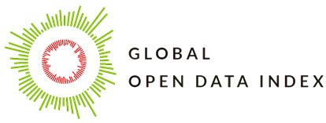
| شاخص: جهانی دادهی باز The Global Open Data Index (GODI) | سایت: https://index.okfn.org |
|---|---|
| آخرین سال گزارش: ۲۰۱۶/۲۰۱۷ | مجری: بنیاد دانش باز (Open Knowledge Network) |
| سرمایه گذاران: دادهی باز برای توسعه (OD4D) مرکز تحقیقات بین المللی توسعه کانادا (IDRC) بانک جهانی (WB) وزارت توسعه بین المللی انگلیس (DFID) و امور جهانی جهانی کانادا (GAC) بنیاد هیولت |
معرفی کوتاه شاخص
شاخص جهانی دادهی باز وضعیت دادههای باز را در کشورهای مختلف ارزیابی و رتبه بندی میکند. این شاخص توسط بنیاد دانش باز اجرا و روش های ارزیابی آن بهصورت داوطلبانه انجام میشود.
شاخص جهانی دادهیباز یک ارزیابی مستقل از دادههای منتشرشده انجام داده وذینفعان مختلف دادهیباز را قادر میسازد تا پیشرفت دولت را با انتشار دادههای باز دنبال کنند. همچنین به دولتها اجازه میدهد تا بازخورد مستقیمی از استفاده کنندگان(کاربران) داده دریافت کنند. این شاخص برای هر دو طرف مبنایی را برای بحث و تجزیهوتحلیل اکوسیستم دادهی باز در کشور خود و در سطح بین المللی فراهم میکند. همچنین کلیه افراد علاقمند برای مشارکت در این گفتگوی آزاد را دعوت نموده تا نتایج را در اختیار داشته و آنها تا حد امکان مرتبط و کاربردی سازند.
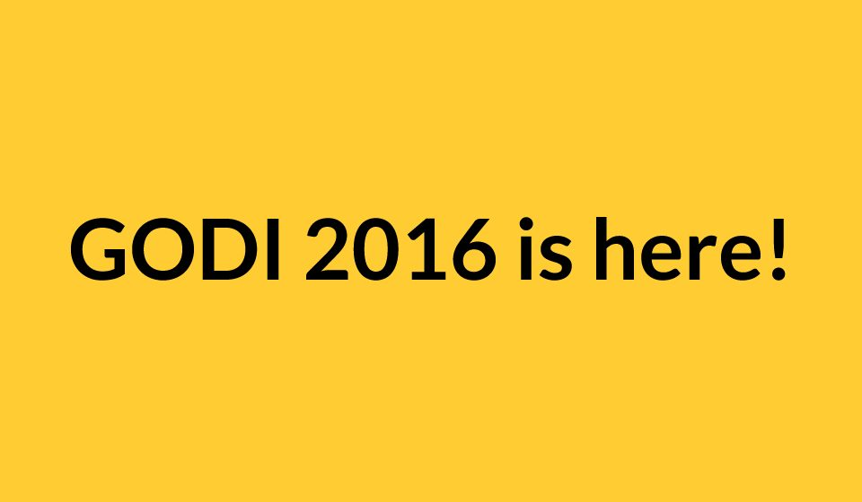
لینک
شاخص به چه داده هایی نگاه میکند؟
GODI باز بودن دسته بندیهای دادهای که به وضوح تعریف شدهاند را اندازهگیری میکند. هر دادهای که در این دسته ها قرار نگیرد، برای ارزیابی ما در نظر گرفته نمیشوند. تمام امتیازات شاخص به طور انحصاری به دستهبندی دادهها اشاره دارد و باید به عنوان یک نمایندهی ارزیابی دادهی حکومتی باز به عنوان یک مقیاس بزرگ درک شوند. این کار به سه دلیل انجام شده است:
- ارزیابی داده هایی که برای عموم مفید هستند.
- کاربرد مقایسهای؛ دستهبندیهای گسترده موجب هزینههای اضافی برای دادههای غیرکاربردی میشود.
- ایجاد یک رویه استاندارد برای کاهش تعصب و قضاوت شخصی
چه چیزی را پوشش نمی دهد؟
- فقط انتشار داده های دولت در سطح ملی و عدم توجه به سایر جنبههای ارزیابی دادهی باز
- عدم توجه به زمینه، کاربرد و یا تاثیر داده ها برای یک تمرکز محدود و با هدف انجام یک ارزیابی استاندارد قوی و قابل مقایسه
- توجه صرف به انتشار داده و عدم توجه به کیفیت داده ها (که یک مانع جدی برای استفاده مجدد میباشد)
فرضیات شاخص
- فرض ۱: دادههای باز توسط Open Definition تعریف شدهاند: Open Definition مجموعه ای از اصول است که باز بودن دادهها و محتوا را تعریف میکند.
- فرض ۲: نقش دولت در انتشار دادهها: انتشار دادهها توسط دولت یا شخص ثالثی که به تایید دولت رسیده است.
- فرض ۳: شاخص جهانی دادهی باز یک شاخص «ملی» است. دادههای سطح ملی را بررسی میکند.
- فرض ۴: GODI «مکانها» را بهجای «کشورها» ارزیابی میکند: در گذشته قدرت انحصاری کشورها ملاک بود ولی اکنون به بخشهای مستقل کشورها نیر توجه میشود. مثال ایرلندشمالی و بریتانیا)
دستهبندی (موضوع-دیتاست) دادهها
GODI بیان میکند که دستهبندی دادههایشان، اطلاعات کلیدی را منعکس نموده که به طور کلی با جامعه مرتبط است. این دستهها با همکاری متخصصان این حوزه و ازجمله سازمانهای مرتبط با دادههای باز، توسعه داده شدهاند. در برخی موارد تعریف دستهها را بر اساس استانداردها و گزارشهای بین المللی مورد استفاده دولتها در سراسر جهان، پایهگذاری نمودهاست. نهایتاً این شاخص اعلام میکند که هر سال تعاریف خود را برای انعکاس یافتههای متخصصان اصلاح میکنند.
لیست مجموعه داده ها
توضیحات با محتویات این لینک جا به جا می شود (خلاصه تر هست)
| ردیف | مجموعه داده | توضیح |
|---|---|---|
| ۱ | بودجه | بودجه ملی دولت در سطح کلان که هزینه برنامهریزیشده دولت برای سال آینده و نه هزینه واقعی است. دادههای بودجه باز به مردم نشان میدهد که پول کجا صرف شده، نحوه توسعه بودجه عمومی در طول زمان چگونه بوده و چرا بودجه برخی فعالیتها تأمین نشده است. |
| ۲ | آمار ملی | همانطور که دیده بان داده باز می گوید «آمار رسمی عنصر ضروری در سیستم اطلاعاتی یک جامعه دموکراتیک را فراهم میکند و اطلاعاتی را در مورد وضعیت اقتصادی، جمعیتی، اجتماعی و محیطی در اختیار دولت، اقتصاد و عموم قرار می دهد.» |
| ۳ | خرید | تمامی مناقصهها و جوایز دولت ملی یا محلی که توسط نهاد مسئول مناقصات جمعآوریشده است. این کار به برنامهریزی برای خرید و یا سایر مراحل خرید ارتباطی ندارد. داده خرید باز میتواند رقابت عادلانهتری را میان شرکتها به وجود بیاورد، تقلب را کشف و همچنین خدمات بهتری را به دولت و شهروندان ارائه نماید. نظارت بر مناقصه موجب کمک به گروههای جدید برای شرکت در مناقصات و افزایش ایجاب دولت میشود. این شاخص از استاندارد قرارداد باز (Open Contracting Partnership) بهره میگیرد. |
| ۴ | قوانین ملی | تمام قوانین و اساسنامههای ملی باید به صورت برخط در دسترس باشند. دسترسی به دادههای باز بر اساس کد قانونی کشور (یعنی قانون ملی) که حمایت از رعایت قانون، امکان پیگیری تغییرات قانونی، و همچنین مشورت عمومی در مورد یک قانون را امکان پذیر میکند. |
| ۵ | حوزههای اداری | دادهها در مورد واحدهای اداری و یا بخشهایی که توسط یک دولت (محلی)، با هدف اداری تعریفشدهاند. کاندیدهای منطقه من چه کسانی هستند؟ کدام نهاد دولتی منطقه من را اداره میکنند؟ چگونه ثروت در مناطق توزیع میشود؟ |
| ۶ | پیش نویس قانونگذاری | اطلاعات در مورد لوایح مورد بحث در پارلمان ملی و همچنین نظرسنجی در مورد لوایح (با قوانین ملی به تصویب رسیده اشتباه گرفته نشود). اطلاعات در مورد لوایح میبایست برای دوره قانونگذاری فعلی در دسترس باشد. داده باز در مورد فرآیند تدوین قانون، برای شفافیت پارلمانی بسیار مهم است: متن لایحه چه میگوید و چگونه در طول زمان تغییر پیدا میکند؟ چه کسی لایحه را ارائه میکند؟ چه کسی به آن رأی میدهد و چه کسی با آن مخالف است؟ این لایحه بعداً کجا بحث میشود تا مردم بتوانند در بحث شرکت کنند؟ این شاخص از استاندارد موسسه ملی دموکراتیک (National Democratic Institute (NDI)) و بیانیه پارلمان باز (Declaration of Parliamentary Openness) بهره میگیرد. |
| ۷ | کیفیت هوا | اطلاعات در مورد میانگین روزانه غلظت آلایندههای هوا، بهویژه آن دسته که بهطور بالقوه برای سلامتی انسان مضر هستند. دادهها باید برای همه ایستگاههای پایش هوا یا مناطق پایش هوا در یک کشور در دسترس باشد. تمرکز شاخص بر آلایندههای مهمی است که توسط سازمان بهداشت جهانی تعریفشدهاند.. |
| ۸ | نقشههای ملی | نقشه جغرافیایی کشور ازجمله مسیرهای رفتوآمد سراسری، امتداد آب و مشخص نمودن ارتفاع. نقشه میبایست حداقل در مقیاس ۱:۲۵۰۰۰۰(۱ cm = 2.5km) تهیهشده باشد. اطلاعات جغرافیایی در بسیاری از موارد مورد استفاده قرار میگیرد، ازجمله نقشهبرداری از آمار بیکاری یا جمعیتشناسی و همچنین برنامهریزی برای سفر. |
| ۹ | پیش بینی وضع آب و هوا | پیشبینی ۳ روزه دما، بارش و باد. پیشبینی میبایست برای چندین منطقه از کشور ارائه شود. پیشبینیهای کوتاهمدت آبوهوا که بایستی قابلاعتماد هم باشند به عموم مردم ارتباط دارند که میخواهند برای فعالیتهای خود برنامهریزی کنند. |
| ۱۰ | ثبت شرکت | لیستی از شرکتهای ثبتشده (با مسئولیت محدود) است. لازم نیست مطالب این مجموعه داده، حاوی اطلاعات مالی دقیق نظیر ترازنامه و غیره باشد. داده باز ثبت شرکت میتواند برای مقاصد بسیاری مورداستفاده قرار بگیرد: بهعنوانمثال، مشتریان و کسبوکار را قادر به دیدن افرادی میسازد که با آنها معامله میکنند و یا امکان مشاهده مکان دفاتر ثبتشده یک شرکت را فراهم میسازد. این تعریف از کار شرکتهای باز کمک میگیرد. |
| ۱۱ | مخارج دولت | سوابق واقعی (گذشته) هزینههای دولت ملی در سطح معاملاتی دقیق. دادهها باید هزینههای جاری، ازجمله معاملات و یارانهها را نشان دهند. یک پایگاه داده از قراردادهای اعطاشده یا مشابه کافی نخواهد بود. داده باز هزینه نشان میدهد که آیا پول مردم بهطور کارآمد و مؤثر مورداستفاده قرار میگیرد با خیر. این امر به درک الگوهای مخارج و نمایش فساد، سوءاستفاده و هدررفت کمک میکند. توصیه میکنیم. |
| ۱۲ | نتایج انتخابات | این دسته داده به نتایج حوزه انتخاباتی/ منطقه تمام رقابتهای انتخاباتی بزرگ ملی نیاز دارد. داده انتخابات، در مورد نتایج رأیگیری و پروسه رأیدهی اطلاعات میدهند. اکثریت و اقلیتهای انتخاباتی چه کسانی هستند؟ چند رأی از رأیهای ثبتشده، نامعتبر یا مخدوش است؟ برای دسترسی به بالاترین میزان شفافیت، این شاخص، داده حوزه رأیگیری را مورد ارزیابی قرار میدهد. دادههای مناطق انتخاباتی کافی نیست. این شاخص بهمنظور توسعه این دسته از دادهها از موسسه ملی دموکراتیک (NDI) کمک گرفت. برای کسب اطلاعات بیشتر به ابتکار داده انتخاباتی باز (Open Elections Data Initiative) NDI رجوع فرمایید. |
| ۱۳ | مکان | یک پایگاه داده از کد پستیها و مختصات فضایی مربوط به آنها از نظر عرض و طول جغرافیایی (یا مختصات مشابه منتشرشده دریک سیستم مختصات باز). دادههای مکانی کل کشور باید در دسترس باشند. |
| ۱۴ | کیفیت آب | دادههای مربوط به کیفیت آب، هم برای ارائه خدمات و هم برای پیشگیری از بیماری ضروری است. این شاخص هم به بررسی کیفیت منابع آب آشامیدنی و هم منابع آب زیستمحیطی میپردازد. بهمنظور برآوردن حداقل الزامات مورد نیاز برای این دسته، داده باید بر اساس سطح مواد شیمیایی در منبع آب در دسترس باشد. |
| ۱۵ | مالکیت زمین | دادهها باید شامل نقشههای زمین با سطح تفکیکشده باشند که علاوه بر مرزها، اطلاعات قطعات ثبت شده زمین را نیز نشان میدهند. |
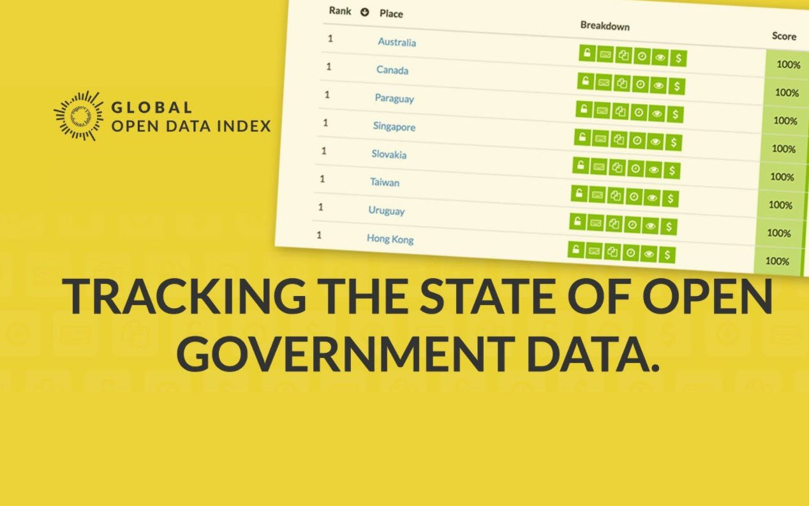
لینک
ابعادومؤلفههای ارزیابی
امتیاز نهایی در این شاخص با ارزیابی گروههای فوقالذکر و با نگاه به دو بعد دسترسی به دادهها و بعد فنیوحقوقی محاسبه شدهاند. ابتدا مشارکتکنندگان بصورت داوطلبانه برای هر کشور و در رابطه با این دو بعد به ۱۱ گویه(سؤال) پاسخ میدهند. پس از دریافت پاسخها، سه مرحله دیگر یعنی بازبینی، تضمین کیفیت و گفتگوی عمومی انجام شدهاست. لازم به ذکر است که در محاسبه امتیازها، وزن سؤالها متفاوت بوده و با جمع امتیاز کل برای یک کشور نتیجهگیری لازم انجام شدهاست.
| بعد | سوال | امتیاز |
|---|---|---|
| دسترسی به داده ها | آیا دادهها توسط دولت جمعآوری و ارائه شده است (یا شخص ثالث مرتبط به دولت)؟ | ندارد |
| آیا دادهها بصورت آنلاین و بدون نیاز به ثبت نام یا درخواست دسترسی به دادهها در دسترس است؟ | ۱۵ | |
| آیا دادهها به صورت آنلاین در دسترس هستند؟ | ندارد | |
| آیا دادهها بصورت رایگان در دسترس هستند؟ | ۱۵ | |
| دادهها از کجا یافت شدهاند؟ | ندارد | |
| چقدر با این نظر موافق هستید: «یافتن دادهها برای من آسان بود.» | ندارد | |
| آیا دادهها به صورت یکجا(همزمان) قابل دانلود است؟ | ۱۵ | |
| دادهها باید [در هر فاصله زمانی] بهروز شوند: آیا دادهها بهروز هستند؟ | ۱۵ | |
| فنی و حقوقی | آیا دادهها دارای مجوز باز / حوزه عمومی هستند؟ | ۲۰ |
| آیا دادهها در قالبهای باز و ماشینخوان وجود دارد؟ | ۲۰ | |
| چقدر تلاش انسانی برای استفاده از دادهها لازم است؟ (۱ = هیچ یا اندکی تلاش نیاز است؛ ۳ = تلاش گسترده مورد نیاز است) | ندارد |
چگونگی جمع آوری و تحلیل داده ها
۱. مرحله ارسال:
در این گام شاخص از طرق مختلف همچون ارتباط با علاقمندان حوزه دادهی باز هرکشور، بکارگیری هماهنگکنندههای محلی، شناسایی از طریق رسانهها و رویدادها نسبت به جمعآوری اطلاعات هرکشور اقدام میکنند.
۲. مرحله بازبینی
در این گام اطلاعات ارسال شده توسط کارشناسان بهصورت تخصصی مورد بررسی قرار میگیرد. برای شفافیت بیشتر و کمک به یادگیری در طول ارزیابی؛ تمامی مشکلات، پیشنهادات و قضاوتهای شخصی کارشناسان در یک دفتر یادداشت ثبت میشود.
۳. تضمین کیفیت
در این گام اعضای تیم بین المللی دانش باز به ارزیابی مجدد مواردی که ۱۰۰ درصد ارزیابی شدهاند میپرازند. تضمین کیفیت با مراحل زیر حاصل میشود:
- بررسی نظرات جامعه.
- مقایسه با نتایج سال گذشته.
- به URL منبع بروید و تمام سؤالات پژوهش را دوباره بررسی کنید.
- به نظرات کارشناسان رجوع میشود.
- بررسی اینکه آیا مجوز باز به طور شفاف به مجموعه داده مرجع اشاره دارد یا خیر. همچنین آیا شرایط مجوز با Open Definition مطابقت دارد یا خیر.
- مشاهده نتایج GODI ۲۰۱۵ و بررسی مواردی که تغییر کردهاند. یک مورد پرتکرار: آیا به یک وب سایت یا پورتال متفاوت مراجعه شدهاست؟
۴. مرحله گفتگو
در این مرحله نتایج(اولیه) منتشر و از جامعه و دولت برای ارائه بازخوردها در یک مهلت یکماهه دعوت بعمل میآید. درنهایت پس از تجدیدنظرهای لازم، نتیجه نهایی منتشر خواهد شد.
نتایج
همانطور که مشخص شد، شاخص به دادههای خاص با استفاده از سوالات خاص نگاه میکند. نتیجه یک امتیاز نهایی است که باید با دقت خوانده شود. با توجه به آنچه که مورد ارزیابی قرارگرفته؛ نتایج اینگونه خوانده میشوند:
| نوع | شرایط | حداکثر امتیاز |
|---|---|---|
| داده باز | می توانند آزادانه توسط هر شخصی و برای هر هدف و منظوری، مورد کاربرد، اصلاح و به اشتراک گذاشته شوند. معیار اصلی: یک مجوزباز ماشین خوان قالب باز دردسترس(داده ها باید به صورت کلی ارائه شده و بدون هزینه قابل دانلود باشد). | ۱۰۰% |
| داده عمومی | بدون هیچ گونه محدودیتی توسط مردم مشاهده شوند. باهیچ ابزارکنترلی محافظت نمیشوند. به راحتی بصورت آنلاین در دسترس باشند. ولی قابلیت دانلود آنها اجباری نیست. گاهی اوقات امکان دانلود متون و سایر اطلاعات در قالبهای ماشین خوان (مانند XML) وجود دارد. مثال: داده ها می توانند به صورت PDF مجوز باز و قابل دانلود باشند اما در قالب ماشین خوان نباشند. در حالی که در دسترس باز هستند، ولی دارای مجوز باز نبوده و از این رو ۱۰۰% نیستند. | تا ۸۰% |
| داده های کنترل شده | اگر ارائه دهنده مقرر کند چه کسی، چه موقع و چگونه می تواند به داده ها دسترسی داشته باشد، داده ها کنترل شده هستند. کنترل دسترسی شامل: ثبت / شناسایی / احراز هویت، یک درخواست فعال توافقنامه به اشتراکگذاری دادهها (مقررات موارد استفاده) سفارش یا خرید داده ها. برخی دلایل دسترسی کنترل شده: مدیریت ترافیک، یا حفظ کنترل چگونگی استفاده از داده ها. | حداکثر ۸۵٪ (داده ها می توانند با محدودیتی که کاربران مجبورند برای دانلود آنلاین ثبت نام کنند؛ باز باشند) |
| شکاف های داده | شکاف داده به این معنی است که دولت ها هیچ داده ای راجع به یک پدیده ارائه نمیکنند. اگر نتایج اعلام کند که دادهای ارائه نشده است، ما اغلب با شکافهای دادهای روبرو هستیم. شکافها نشان می دهند که برخی از دولتها برای رسیدن به آمادگی لازم جهت ارائه داده، هنوز راه طولانی درپیش دارند. | حداکثر امتیاز: ۰ % |
نتایج کلی
آخرین نسخه منتشرشده این شاخص در سال ۲۰۱۶/۲۰۱۷، ۱۷۶ کشور جهان را در ۱۵ موضوع فوق مورد ارزیابی قرار داد. در رتبهبندی نهایی کشور تایوان با کسب امتیاز ۹۰%، استرالیا و بریتانیا با ۷۹%، فرانسه با ۷۰%، فنلاند و کانادا و نروژ با ۶۹% امتیاز(بصورت مشترک) ردههای اول تا چهارم را به خود اختصاص دادهاند.
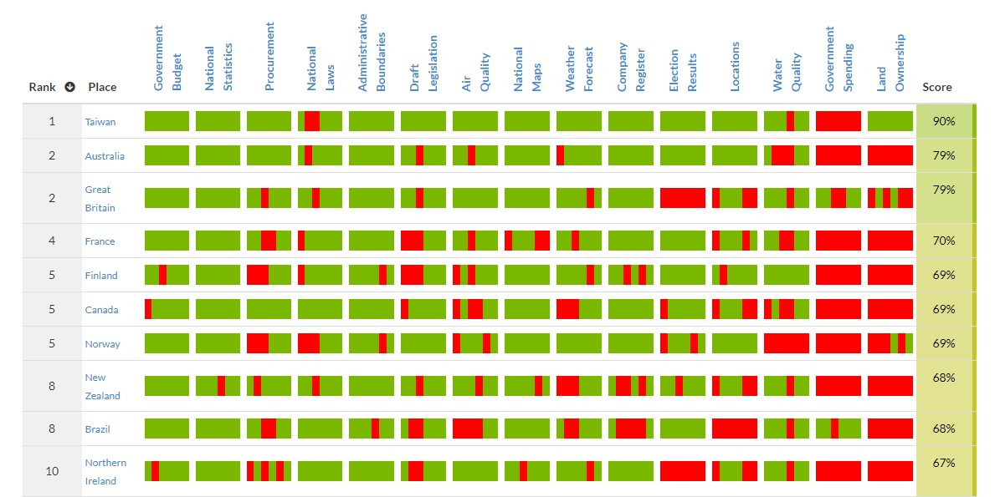
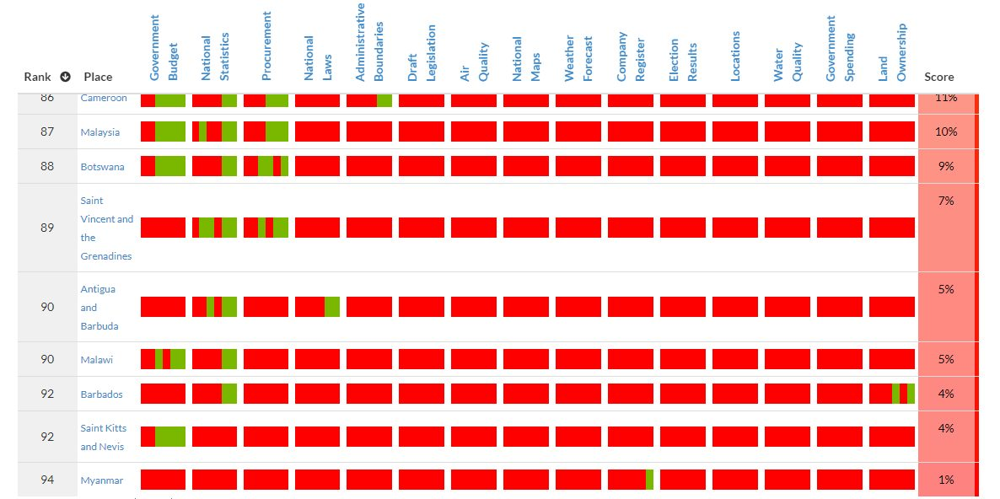
درحالی که در سال ۲۰۱۵، در رتبهبندی نهایی کشور تایوان با کسب ۷۸% امتیاز، انگلستان با ۷۶%، دانمارک با ۷۰%، کلمبیا با ۶۸%، فنلاند و استرالیا با ۶۷% امتیاز(بصورت مشترک) ردههای اول تا پنجم را به خود اختصاص داده بودند. خلاصهای از بهترین و بدترین کشورها را از نگاه این شاخص می توانید در جدول زیر مشاهده نمایید:
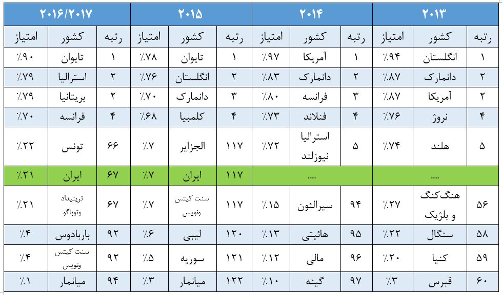
نکته: روش ارزیابی بهکارگرفته شده در شاخص جهانی دادهی باز در طول زمان (به ویژه بین سالهای ۲۰۱۵ و ۲۰۱۶)تغییر پیدا نموده است. به همین خاطر نتایج با گذرزمان قابل مقایسه نخواهند بود.
وضعیت ایران
در این بررسی جمهوری اسلامی ایران با کسب ۲۱% امتیاز در رتبه ۶۷ قرار گرفته است. با توجه به نتایج سال ۲۰۱۵ که ایران با کسب ۷% امتیاز در رتبه ۱۱۷ قرار داشت، گام بلند ایران برای رسیدن به اهداف این زمینه را بیش از گذشته پررنگ نمود. ایران در مجموعه گروههای آمار ملی با کسب ۸۵% امتیاز، کیفیت هوا با ۶۵%، قوانین ملی با ۵۰%، بودجه با ۴۵%، قوانین با ۴۵% و ثبت شرکت با ۳۰% بهترین امتیاز گروهی را بدست آوردند. در حالی در سایر گروهها هیچ امتیازی کسب نکرده است. تصویر زیر نمای کلی از وضعیت ایران نمایش داده شده است:
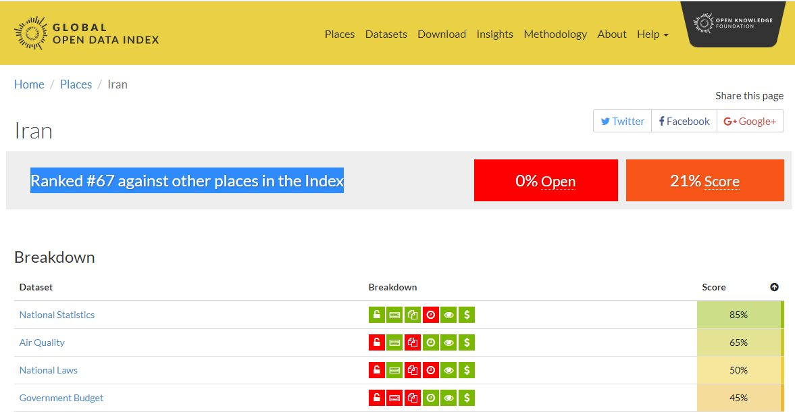
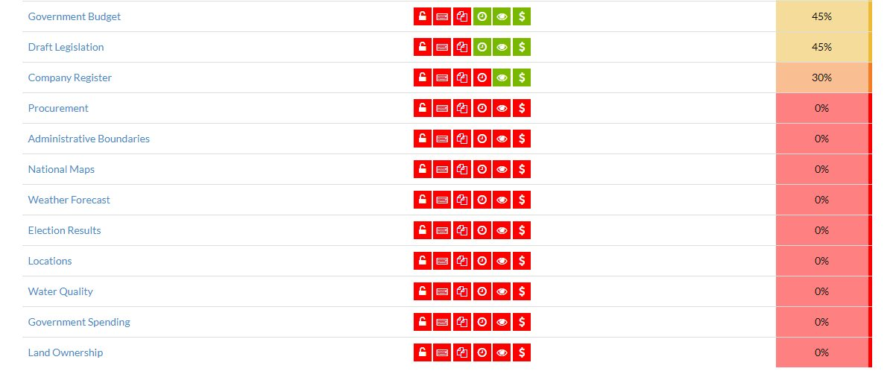
تصویر سازی نتایج
علاوه بر نتایج کلی به تفکیک کشورها و دستهها؛ نتایج هریک دستهها نیز به صورت گرافیکی قابل مشاهده است. تصویر زیر یک نمونه مربوط به آمار ملی کشور جمهوری اسلامی ایران میباشد:
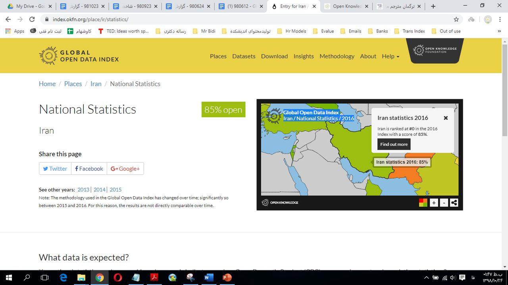

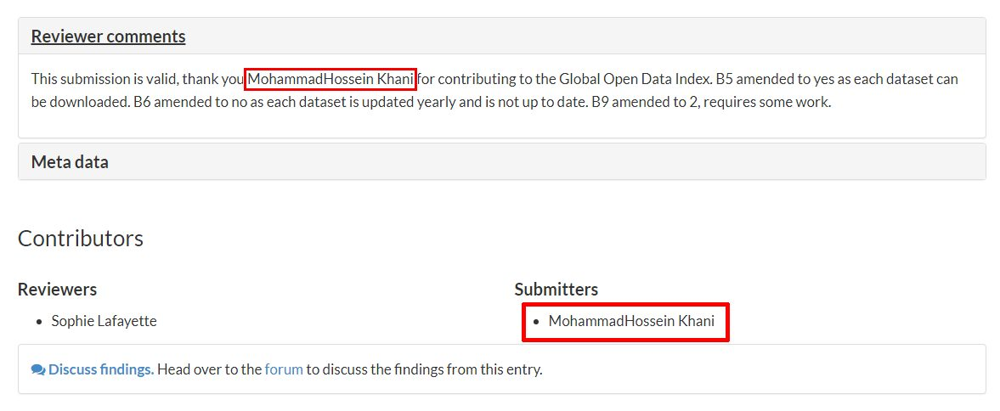
وضعیت دستهبندیها
در قالب گروهی نیزبصورت میانگین بودجه با کسب ۷۲% امتیاز، آمارملی با ۷۲%، تدارکات با ۵۳% و قوانین با ۵۲% به عنوان بهترین گروههایی که دادهی بیشتر و با کیفیتتری در آنها ارائه شده است؛ میزان توجه به آنها برجسته شد. همچنین گروههای کیفیت آب با کسب ۱۵% امتیاز، مخارج دولت با ۹% و مالکیت زمین با ۸% در پایینترین سطح توجه قرار گرفتند. با این وجود، کشور فنلاند در گروه کیفیت آب، کشورهای یونان و کلمبیا در گروه مخارج دولت و کشور تایوان در گروه مالکیت زمین بهترین عملکرد را از خود نشان دادهاند.
میانگین امتیازهای مربوط به هریک از دسته بندیها و تعداد کشوری که درآن موضوع بهترین عملکرد را داشته است؛ در جدول زیر ذکر شده است. با توجه به تعدد کشورها، از ذکر موارد متعدد خودداری شده است. این نتایج مربوط به سال ۲۰۱۶/۲۰۱۷ میباشد.
| رتبه | گروه (دیتاست) | میانگین | تعدادکشور برجسته (۱۰۰%) |
|---|---|---|---|
| ۱ | بودجه | ۷۲% | ۳۳ کشور |
| ۲ | آمار ملی | ۷۲% | ۲۶ کشور |
| ۳ | خرید | ۵۳% | ۱۰ کشور |
| ۴ | قوانین ملی | ۵۲% | ۱۰ کشور |
| ۵ | حوزه های اداری | ۴۵% | ۱۹ کشور |
| ۶ | پیش نویس قانونگذاری | ۴۳% | ۶ کشور |
| ۷ | کیفیت هوا | ۴۱% | ۸ کشور |
| ۸ | نقشه های ملی | ۳۷% | ۱۰ کشور |
| ۹ | پیشبینی آب وهوا | ۳۵% | ۷ کشور |
| ۱۰ | ثبت شرکت | ۳۰% | ۱۳ کشور |
| ۱۱ | نتایج انتخابات | ۲۸% | ۲۶ کشور |
| ۱۲ | مکانها | ۱۶% | ۸ کشور |
| ۱۳ | کیفیت آب | ۱۵% | فنلاند |
| ۱۴ | مخارج دولت | ۹% | کلمبیا - یونان |
| ۱۵ | مالکیت زمیین | ۸% | تایوان |
نقشه هوایی وضعیت گزارش جهانی دادهی باز
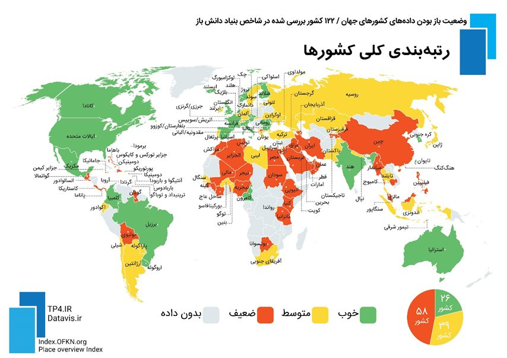
گزارش پژوهشی داخلی